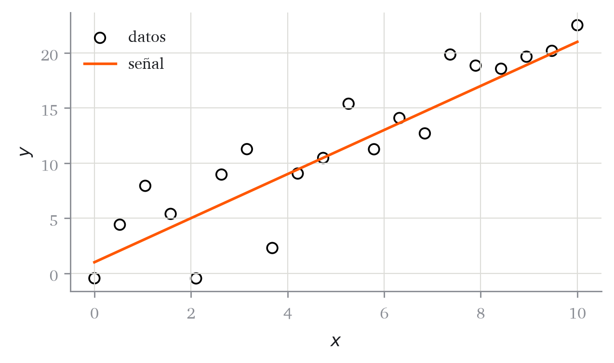

n = 20
sigma = 3.0
titulo = "señal más ruido"
print(n, sigma, titulo)20 3.0 señal más ruidoEste anexo es lo justo para abrir el cuaderno del capítulo 1, ejecutarlo y modificarlo. No enseña a programar: enseña a ejecutar y a leer el código del curso, que es lo que el examen pregunta. Cada bloque de abajo se puede copiar en una celda y lanzar. Si ya manejas Python, ve directamente al diagnóstico del final.
Colab ejecuta Python en un ordenador de Google, desde el navegador. No hay que instalar nada: basta una cuenta de Google. Las bibliotecas del curso (torch, numpy, matplotlib, scikit-learn) ya vienen instaladas.
Cada capítulo publica su cuaderno, con los huecos que se completan en el laboratorio, y el enlace lo abre en Colab. Este anexo también tiene el suyo, con todas las celdas de abajo:
Abre el cuaderno de esta página en Google Colab. Lo primero, Archivo → Guardar una copia en Drive.
Guardar la copia no es una formalidad: el cuaderno que se abre desde el enlace es de solo lectura, así que puedes ejecutarlo, pero si cierras la pestaña pierdes lo que hayas escrito. La copia en tu Drive es tuya y se guarda sola.
Un cuaderno es una lista de celdas. Las de código se ejecutan y las de texto solo se leen.
[7], dice que esa celda fue la séptima que se ejecutó. Es el orden de ejecución, no el orden en que está escrita en la página.Esa última opción resuelve la mayoría de los problemas del primer día.
Una variable es un nombre para un valor. Se asigna con =, que no es igualdad matemática sino “guarda esto con este nombre”.
n = 20
sigma = 3.0
titulo = "señal más ruido"
print(n, sigma, titulo)20 3.0 señal más ruido20 es un entero y 3.0 un decimal; el punto es la diferencia. Los textos van entre comillas. La última expresión de una celda se muestra sola, sin print:
n * sigma60.0Una lista se escribe entre corchetes y se indexa desde cero:
pesos = [0.2, 0.2, 0.6]
pesos[0], pesos[2], len(pesos)(0.2, 0.6, 3)Los paréntesis hacen una tupla, que funciona igual pero no se puede modificar. Y una asignación puede repartir varios valores a la vez, algo que el curso usa mucho:
a, b = -0.3, 0.2
media, desviacion = 0.0, 1.0
a, b, media, desviacion(-0.3, 0.2, 0.0, 1.0)def define una función: un cálculo con nombre, que recibe argumentos y devuelve un valor con return. El cuerpo va indentado cuatro espacios, y la indentación es obligatoria: es lo que marca dónde empieza y acaba la función.
def recta(x, pendiente, intercepto):
return pendiente * x + intercepto
recta(2.0, 3.0, 1.0)7.0Los argumentos se pueden pasar por nombre, y así se lee mucho mejor cuando son varios:
recta(2.0, intercepto=1.0, pendiente=3.0)7.0for repite algo para cada elemento de una lista, y if decide. Los dos usan indentación.
mejor = -100.0
for candidato in [1.5, 2.0, 2.5]:
valor = -(candidato - 2.0) ** 2
if valor > mejor:
mejor = valor
mejor_candidato = candidato
mejor_candidato, mejor(2.0, -0.0)Ese bucle es, en pequeño, el del final del capítulo 1: probar candidatos y quedarse con el mejor.
Los datos del curso no son listas, son tensores de torch. Un tensor es una tira de números sobre la que las operaciones actúan elemento a elemento, sin escribir bucles. Es la razón de usarlos: la fórmula matemática se traduce casi literalmente.
import torch
x = torch.tensor([0.0, 1.0, 2.0, 3.0])
2 * x + 1tensor([1., 3., 5., 7.])Compáralo con una lista: 2 * [0.0, 1.0] repetiría la lista en lugar de multiplicar. Las tres formas de crear tensores que usa el capítulo 1:
torch.linspace(0, 10, 5) # 5 valores igualmente espaciados de 0 a 10tensor([ 0.0000, 2.5000, 5.0000, 7.5000, 10.0000])torch.randn(4) # 4 números al azar de una normal estándartensor([ 0.3761, -0.2283, 1.4198, -0.6559])torch.normal(3.0, 2.0, size=(4,)) # al azar, con media 3 y desviación 2tensor([ 5.6305, -0.2154, 0.5128, -0.2970])Y las operaciones que hacen falta para leer el capítulo:
y = torch.tensor([1.0, 4.0, 9.0])
y.sum(), y.max(), len(y), y[0](tensor(14.), tensor(9.), 3, tensor(1.))Dos métodos que aparecen en todas las celdas y conviene entender:
.item() saca el número de un tensor de un solo elemento, para poder usarlo como un decimal normal. Sobre un tensor de varios da error..numpy() convierte el tensor en un array de numpy, que es lo que entiende matplotlib al dibujar.y[0].item(), y.numpy()(1.0, array([1., 4., 9.], dtype=float32))Todas las figuras del curso siguen el mismo patrón de tres líneas: crear los ejes, dibujar sobre ellos y etiquetar.
from matplotlib import pyplot as plt
x = torch.linspace(0, 10, 20)
y = 2 * x + 1 + 3 * torch.randn(20)
fig, ax = plt.subplots(figsize=(5, 3))
ax.scatter(x.numpy(), y.numpy(), color="black", facecolors="none",
label="datos")
ax.plot(x.numpy(), (2 * x + 1).numpy(), color="#ff5700", label="señal")
ax.set(xlabel="$x$", ylabel="$y$")
ax.legend()
plt.tight_layout()
ax.scatter pinta puntos y ax.plot una línea. Fíjate en los .numpy(): sin ellos matplotlib no sabe dibujar un tensor.
torch.randn da números distintos cada vez, así que una figura no saldría dos veces igual. Fijar la semilla hace que la secuencia de números al azar sea siempre la misma:
torch.manual_seed(42)
primera = torch.randn(3)
torch.manual_seed(42)
segunda = torch.randn(3)
primera, segunda(tensor([0.3367, 0.1288, 0.2345]), tensor([0.3367, 0.1288, 0.2345]))Los dos tensores coinciden. Todos los capítulos fijan la semilla al principio, y de ahí que las cifras del texto sean reproducibles. En el capítulo 4 se verá que la semilla no es un detalle: cambiarla cambia qué modelo se elige.
| Lo que sale en rojo | Qué ha pasado |
|---|---|
NameError: name 'x' is not defined |
no has ejecutado la celda donde se define x. Ejecuta de arriba abajo |
IndentationError |
falta o sobra la indentación del cuerpo de un def, un for o un if |
TypeError: only one element tensors can be converted... |
.item() sobre un tensor de varios elementos |
ModuleNotFoundError |
en Colab no debería pasar; si pasa, ejecuta !pip install torch en una celda |
| Ningún error, pero el número no cuadra | cambiaste una celda de arriba y no la volviste a ejecutar. Reiniciar y ejecutar todo |
El último es el más traicionero, porque no avisa. Ante cualquier resultado que no cuadre, lo primero es reiniciar y ejecutar todo.
Veinte minutos, en Colab. No cuenta para la nota; sirve para saber si puedes seguir el laboratorio del capítulo 1.
2 + 2.n = 50 y sigma = 2.0 en una celda, y en otra celda calcula n * sigma. Reinicia el entorno y ejecuta solo la segunda: explica el error que sale.x = torch.linspace(0, 1, 5) y calcula 3 * x - 1 sin escribir ningún bucle.cuadrado(z) que devuelva z ** 2 y compruébala con un tensor..mean().x = torch.linspace(0, 5, 30) e y = x ** 2 + torch.randn(30), con etiquetas en los dos ejes.7, genera torch.randn(3), vuelve a fijarla en 7 y genera otros tres. Di si coinciden y por qué.